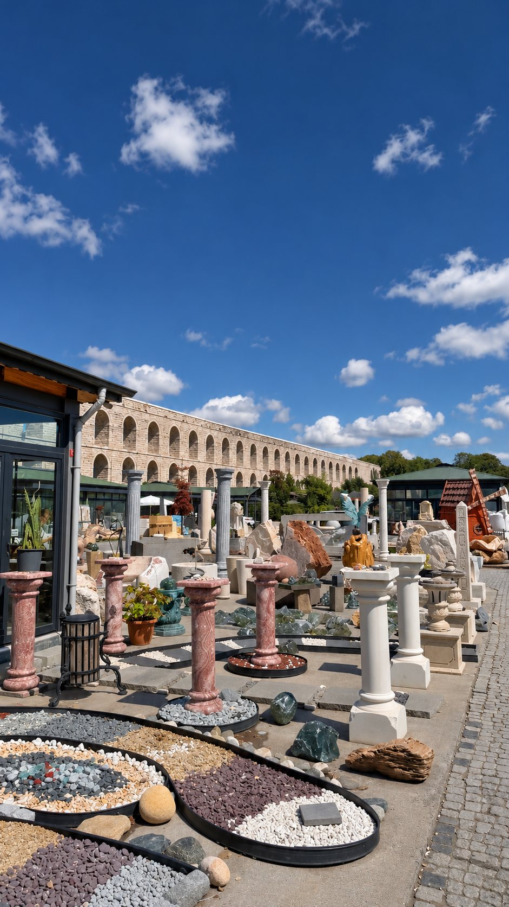

Doğal taşlar
Tamburlanmamış veya ebatlı, çok çeşitli doğal taşlar ve farklı boyutlarda doğal kayaçlar.
Taş Dünyası, aile şirketleri olan bir grubun parçası. Ortakların 40 yılı aşan ticaret hayatında madencilik, doğal taş, peyzaj ve inşaat sektörlerinde deneyim ile çok değerli bir müşteri ve tedarikçi çevresi oluştu.
2003'ten beri aynı adreste, İstanbul Kemerburgaz'da, Mimar Sinan'ın bugünkü hâlini verdiği tarihî Uzun Kemer'e bitişik 10.000 m² açık ve kapalı alanda faaliyet gösteriyoruz. Doğal taş ve cam tamburlama tesislerimiz, aynısı olmayan tek üretim art nouveau anlayışımız ve 500'ü aşan ürün çeşidimizle İstanbul'da tekiz.

Şirketler grubunun temelleri, bugünkü aynı ortaklar tarafından inşaat malzemeleri satışıyla atıldı. Kemerburgaz'daki Kemer Country villalarının inşaatında alt yüklenicilik de yapıldı.
Ruhsatlı alanda agrega üretimine yönelik taş ocağı işletmeciliği başladı.
Doğal taş ticareti başladı. Taş Dünyası o günden bugüne aynı adreste, Kemerburgaz'da faaliyet gösteriyor.
Haziran 2016'da 24 daire ve 4 dükkândan oluşan ilk konut projesine başlandı.
Yakut Evleri (Arnavutköy / Bolluca) temmuzda teslim edildi. Taş Dünyası'nın ruhsatlı taş ocağı sahası rödovans sözleşmesiyle işletmeye alındı.
Türkiye'nin her bölgesinden ve diğer ülkelerdeki tedarikçilerimizden temin ettiğimiz; inşaat, peyzaj, iç ve dış mekân dekorasyonu, döşeme ve kaplamada kullanılan ürünleri sunuyoruz.
Tamburlanmamış veya ebatlı, çok çeşitli doğal taşlar ve farklı boyutlarda doğal kayaçlar.
Kaya formu dahil, farklı ebatlarda tamburlanmamış peyzaj ve dekorasyon camları.
Kendi tesislerimizde tamburlanan, farklı ebat ve çeşitlilikte doğal taş ve cam.
Kullanılmış eski ve antik taşlar, anforalar.
Kadromuzdaki heykeltıraşlarca doğal taş, ağaç kökü, masif kütük ve metalden; kurumsal yazı, logo, portre, hayvan, çiçek, eşya ve soyut temalı, aynısı olmayan tek üretim eserler.
Bahçe oturma grubu, bank, saksı, çiçeklik, çeşme, havuz ve fıskiye gibi işlevsel ve yaratıcı ürünler.
Büyük bölümü müzayedelerden alınmış, 400’den fazla çeşide ulaşan antika koleksiyon.
Konut projeleri. İlk proje Yakut Evleri (24 daire, 4 dükkân), temmuz 2017'de teslim edildi.
1992'den bu yana Göktürk'teki ruhsatlı ocaklarında taş ocağı (agrega) işletmeciliği yapıyor.
Showroom ve stok sahamızı Kemerburgaz'da gezebilir, fiyat ve numune için yazabilirsiniz.